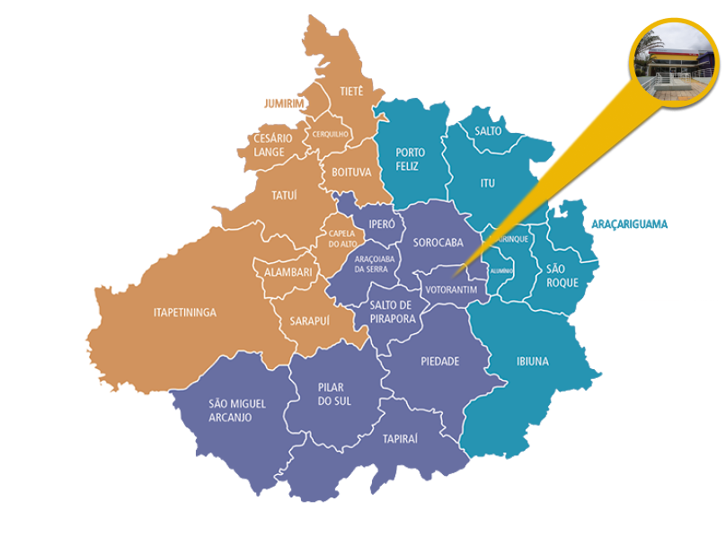

Login
|
Resgistre-se
Olá, seja bem vindo ao Capi.Tech
Faça o login ou registre-se para manter toda sua jornada salva.
Esqueci minha senha

Vestibular
Siga seu sonho e entre na faculdade GRÁTIS!



Votorantim
A Faculdade de Tecnologia (Fatec) chegou na cidade de Votorantim em abril deste ano, é a primeira unidade da instituição no município. Ela está localizada na avenida Juscelino Kubitschek de Oliveira, 279, na Vila Protestantes. Atualmente, a unidade tem dois cursos, mas futuramente serão implantados outros três: Construção Civil (Edifícios), Controle de Obras e Redes de Computadores. A inauguração está prevista para dezembro deste ano.